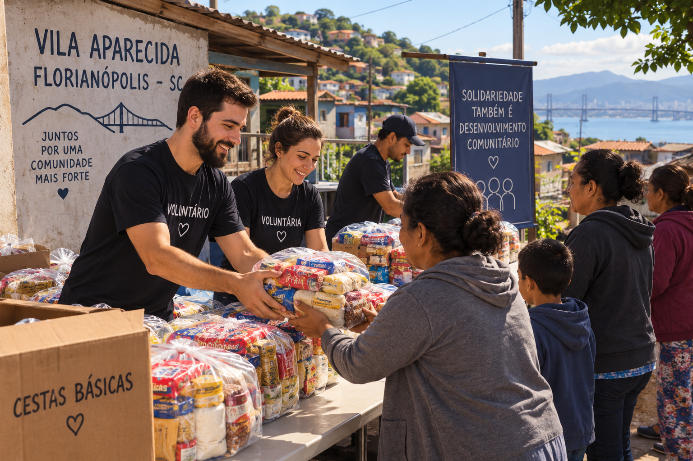

Depoimento de Maria das Graças
Antes do reforço escolar, meu filho ficava sozinho em casa enquanto eu trabalhava. Hoje ele estuda, faz amigos e participa do time de futebol. Isso mudou a rotina da nossa família inteira.

Há 8 anos, o Instituto Vidas da Vila Aparecida atua dentro da própria comunidade, oferecendo reforço escolar, atividades esportivas e apoio a famílias em situação de vulnerabilidade. Tudo o que fazemos nasce de quem mora e conhece as necessidades daqui.
Acreditamos que educação e pertencimento comunitário transformam trajetórias. Por isso, oferecemos reforço escolar gratuito, um time de futebol para crianças e adolescentes, e distribuição mensal de cestas básicas para famílias cadastradas.
E-mail: contato@vidasvilaaparecida.org.br
Telefone: (48) 99999-9999
Endereço: Rua da Fonte, 000 — Vila Aparecida, Florianópolis - SC
Antes do reforço escolar, meu filho ficava sozinho em casa enquanto eu trabalhava. Hoje ele estuda, faz amigos e participa do time de futebol. Isso mudou a rotina da nossa família inteira.
Fui voluntário por seis meses dando aula de reforço aos sábados. O que mais me marcou foi ver o quanto uma tarde de atenção muda o jeito de uma criança encarar a escola.